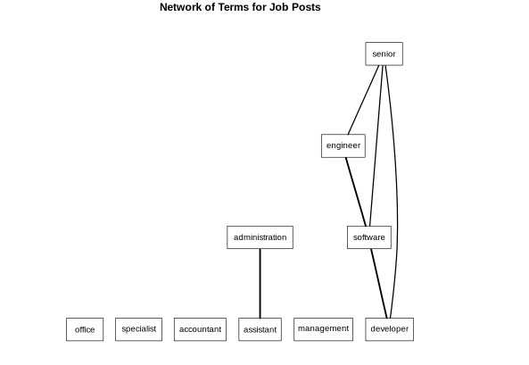
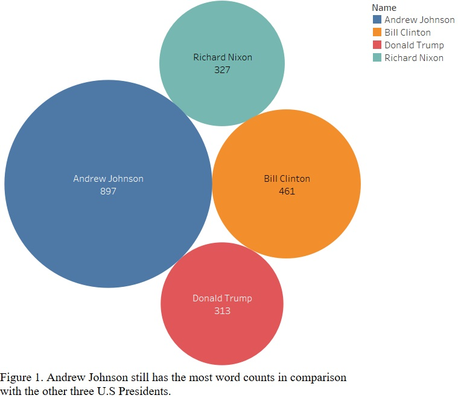

The capstone project result shows the number one fraudulent job postion in 2019 is “Cruse Staffed Wanted URGENT” in the United States and contains “See job description” which is highly likely a fraudulent job.

Machine Learning Projects
Academic experience and self-learning projects on Machine Learning using the following models: Association Rules, Decision Tree, Native Bayes, Neural Network, Texting Mining Group Project.

Time Series with Tableau Project
We will analyze the past trends between the three teams and accurately predict the future. Manchester City is most excited team to watch in England football.

SQL in DB2 on Cloud with RStudio environment in Watson Studio Project
In conclusion, the analysis's main finding is that there were many negative sentiment tweets with Donald Trump. No candidate mentioned FOX News or Moderators and none of the above topics during the first GOP Debate.

Text Analysis Project
After analyzing the texts in these impeachment articles, President Donald Trump may not withdraw from office on some common words from the previous three presidents.